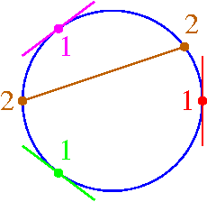

| Monotone Conjecture |
|
23 |
Suppose that we have Grassmannian conditions of index
i1 <=
i2 <= ... <=
ik.
Points
s1 ,
s2 , ... , sk
on the rational normal curve g are
monotone if they occur in order along g.
Monotone Conjecture
All partial flags satisfying Grassmannian conditions imposed by
flags osculating the rational normal curve at monotone choices of
points will be real.
|  | ||
| Monotone Solutions always real |
Not Monotone Solutions not always real |